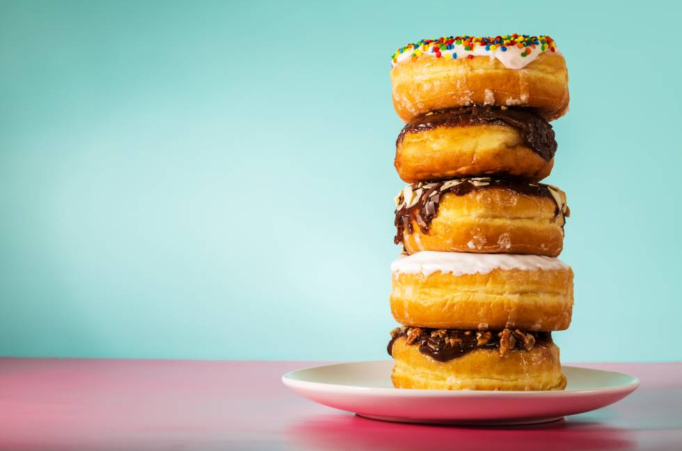

NOTICIAS
TRES MOMENTOS EN LOS QUE EL AZÚCAR ESTÁ JUSTIFICADO, Y UNO EN EL QUE NO
El azúcar vive su peor crisis de imagen en siglos. Tomarla sin que nos invada cierto sentimiento de culpabilidad es cada vez más complicado. Sin embargo, aquí tienes tres motivos que sí justifican rendirse a ella (y un cuarto que no). Después del reinado de los postres sin gluten ni culpa y las decadentes opciones light, la mantequilla recupera su trono. El confitero asturiano Jonathan González (Pastelería Cabo Busto, en Luarca) encuentra en un buen croissant la máxima expresión del efecto mantequilla: esponjoso, crujiente y sabroso. El aceite nunca consigue la misma textura porque no es capaz de aglutinar igual la masa. González recomienda añadir fruta a los postres donde la mantequilla manda (la tarta tatín, por ejemplo). Y recordar que está muy bien cuidarse, pero aquí hablamos de pasteles.
A FAVOR
Vuelve la mantequilla
Después del reinado de los postres sin gluten ni culpa y las decadentes opciones light, la mantequilla recupera su trono. El confitero asturiano Jonathan González (Pastelería Cabo Busto, en Luarca) encuentra en un buen croissant la máxima expresión del efecto mantequilla: esponjoso, crujiente y sabroso. El aceite nunca consigue la misma textura porque no es capaz de aglutinar igual la masa. González recomienda añadir fruta a los postres donde la mantequilla manda (la tarta tatín, por ejemplo). Y recordar que está muy bien cuidarse, pero aquí hablamos de pasteles.
Viva el ‘cheesecake’
La novedad es que ya no solo es yanqui. Eric Ortuño, chef pastelero en la Escuela de Hostelería Hofmann, menciona “la tarta alemana con queso quark, la japonesa cotton cheesecake hecha con queso kiri o la famosa tarta de queso de La Viña, en Donosti, muy cremosa”. Hoy, las revisiones continúan, así que pedimos al experto que elija por nosotros la mejor opción: “Base de galletas elaborada con crackers, que le da un punto crujiente fabuloso; relleno de queso Philadelphia al baño María, tierno y jugoso, y mermelada de mango y fruta de la pasión”.
Un chocolate es para siempre
Lo han mezclado con algas, aceitunas, tocino… y hasta con wasabi. Le han aplicado texturas y lo han analizado de arriba abajo –incluso con ultrasonidos– para, por ejemplo, quitarle azúcar o grasa. A base de contorsionismos, el chocolate ha perdido los complejos y ha conquistado a maestros como Ricardo Vélez (Moulin Chocolat, Madrid). Este científico-pastelero es el autor de la primera tónica de chocolate del mundo (Shock!) y sostiene que con el cacao se puede hacer de todo, “incluso platos cuyo resultado no recuerde al sabor del chocolate”.
EN CONTRA
Adiós a las mezclas
Llámelos frankenpastries, híbridos o simplemente sacrilegios, porque muy pocos han alcanzado la fortuna ni la genialidad del cronut (mitad donut, mitad croissant), que patentó Dominique Ansel en 2013. Tras su estela llegaron tiramuffins, pizookies, churrelados, brookies, duffins y otros neologismos que saltaron sin red y acabaron chafados. Ahora que el temporal ha pasado, dejémonos de mezclas raras que solo sirven para justificar hashtags.